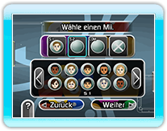

● Wii-Fernbedienungen zuweisen
Du kannst eine einzelne Wii-Fernbedienung verwenden, die mehrere Spieler abwechselnd benutzen. Nachdem der Stoß ausgeführt wurde, reichst du sie an den nächsten Spieler weiter.

● Ein Mii™ auswählen
Während des Spiels kann sich jeder Spieler einen Mii seiner Wahl anzeigen lassen. Du kannst aber auch spielen, ohne einen ausgewählt zu haben.
● Matchup-Spiel
Je nach Wettbewerb, kannst du gegen 1-4 Spielern
antreten oder mit 2 Teams ein Individuelles Spiel
gegeneinander im Team-Play spielen.
● Regeln
In manchen Spielen kannst du aus einer Anzahl
Regeln frei wählen. Einige Regeln gelten ausschließlich für „CueSports - Snooker vs Billiards“.
● Bank Shots
Innerhalb eines Wettbewerbs wird die Reihenfolge durch einen Bankshot festgelegt. Stoße die Spielkugel von hinter der Kopflinie in Richtung Fußbandenspiegel. Der Spieler, dessen Kugel dem Kopfbandenspiegel am Nächsten kommt, beginnt den Wettbewerb.
● Spielziele
Gewonnen hat der Spieler mit den meisten Racks
oder der höchsten Punktzahl. Spielziele kannst du vor Spielstart selbst bestimmen.
● Wiederholen
Besonders gute Stöße kannst du als Wiederholung
speichern und dir im Wiederholungsmodus so oft
ansehen, wie du möchtest.